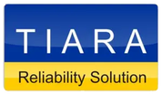
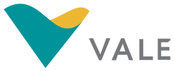
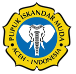

RCFA
Centrifugal Pump Failure Analysis
Root cause investigation of recurring pump failures at an oil and gas facility. Identified bearing wear patterns and lubrication deficiencies. Delivered corrective and preventive action plan.
PT Turbo Kontrol Solusi helps industries across Indonesia optimize machinery performance, prevent costly failures, and build internal capability through expert consultation, data analytics, and professional training.
PT Turbo Kontrol Solusi (Turboksi) is an Indonesian engineering and technology company founded in 2023, specializing in rotating equipment reliability, failure analysis, and industrial automation. We serve clients across oil & gas, power generation, geothermal, mining, and manufacturing sectors.
Delivering cutting-edge technology in machinery optimization and industrial automation — trusted by the industries that power the nation.
Legal Standing
Ministry of Law & Human Rights · Approval No. AHU-0048596.AH.01.01.TAHUN 2023
Expert consultation and design of rotating equipment, ensuring best performance through condition monitoring and predictive maintenance techniques.
AI-powered analytics and machine learning to optimize plant performance. Real-time monitoring systems for better decisions and operational efficiency.
Training programs and technical consultancy empowering professionals in PLC programming, maintenance planning, and failure analysis.
Purpose-built software tools — RCA Tool and RCM Tool — that bring structured methodology and data integrity to industrial investigation workflows.
Trusted by leading Indonesian companies



From engineering consultation to hands-on training — a full spectrum of industrial reliability services.
 01
01
We help clients select and design the right pumps, compressors, turbines, fans, and blowers for their operational environment — optimizing efficiency and long service life.
 02
02
Using vibration analysis, oil sampling, thermography, and real-time sensor data, we detect early signs of equipment degradation before they become costly failures.
 03
03
We apply structured methodologies — Fishbone diagrams, 5-Why analysis, fault tree analysis — to find the true root cause and deliver a corrective action plan that prevents recurrence.
Purpose-built platforms guiding your team through structured, systematic processes — from investigation to report.
A structured digital platform for conducting Root Cause Analysis on industrial incidents, from evidence collection to corrective action, with automatic PDF report generation.
Learn more about RCA Tool →Reliability Centered Maintenance — a systematic approach to defining optimal maintenance strategies for critical industrial assets. Currently in active development.
Get notified when it launches →A snapshot of consulting and analysis work completed with industrial partners across Indonesia since 2023.
Root cause investigation of recurring pump failures at an oil and gas facility. Identified bearing wear patterns and lubrication deficiencies. Delivered corrective and preventive action plan.
Systematic investigation of a critical steam turbine trip using Fishbone and 5-Why methodology. Findings presented to plant management with structured actionable recommendations.
2-day intensive training for 20+ engineering and maintenance personnel. Covered RCA methodology, Fishbone diagrams, 5-Why, and documentation best practices with live case studies.
Common questions about our engineering services, RCA software, and training programs.
PT Turbo Kontrol Solusi (Turboksi) is an engineering and technology solutions company based in South Jakarta, Indonesia. We provide nine core services: rotating equipment design and selection, condition monitoring and predictive maintenance, root cause failure analysis (RCFA), training and consultancy, maintenance strategy development, PLC programming and automation, AI-powered analytics, reliability centered maintenance (RCM), and project management and technical advisory. All services are tailored for industrial clients across Indonesia in sectors including oil and gas, power generation, and manufacturing.
RCA Tool (available at rcatool.site) is a structured digital platform built by Turboksi for conducting Root Cause Analysis on industrial incidents. It guides engineering teams through the entire investigation workflow: evidence collection, Fishbone diagram mapping, 5-Why analysis, corrective action planning, and automatic PDF report generation. RCA Tool eliminates the need for manual spreadsheets and Word documents, ensuring every investigation follows a consistent, auditable process. It is used by 80+ users across industrial facilities in Indonesia and is available in both a free tier and a Pro subscription plan.
Yes. Turboksi provides in-house and on-site RCA training programs customized for maintenance and engineering teams across various industrial sectors. Our training covers RCA methodology, Fishbone diagram construction, 5-Why analysis, failure mode identification, and formal report documentation using real case studies from the client's own industry. Programs are typically delivered as 1 to 2 day intensive workshops and can accommodate groups of 10 to 30+ participants.
Turboksi specializes exclusively in rotating equipment reliability and industrial failure analysis. Our differentiators are: deep technical expertise in condition monitoring, predictive maintenance, and RCFA for rotating machinery such as pumps, compressors, and turbines; proprietary digital tools (RCA Tool and the upcoming RCM Tool); and a combination of consultancy and training under one firm, enabling clients to build lasting internal capability rather than remaining dependent on external support.
Turboksi has delivered engineering consulting, root cause analysis, and training services to clients across multiple industrial sectors in Indonesia since 2023. Our clients include major state-owned and private enterprises such as Pertamina, PLN, Geodipa, Vale, and Pupuk Iskandar Muda, spanning oil and gas, power generation, geothermal, mining, and manufacturing industries.
You can reach PT Turbo Kontrol Solusi directly by email at ptturbokontrolsolusi@gmail.com. Our office is located at Jl. KH Abdullah Syafei, Tebet Timur, South Jakarta 12820, Indonesia. We are open to discussing engineering consultation projects, RCA investigation engagements, in-house training requests, and software inquiries. We typically respond to inquiries within one to two business days.
Interested in our services, products, or a collaboration? Reach out — we're happy to discuss your specific industrial challenges.